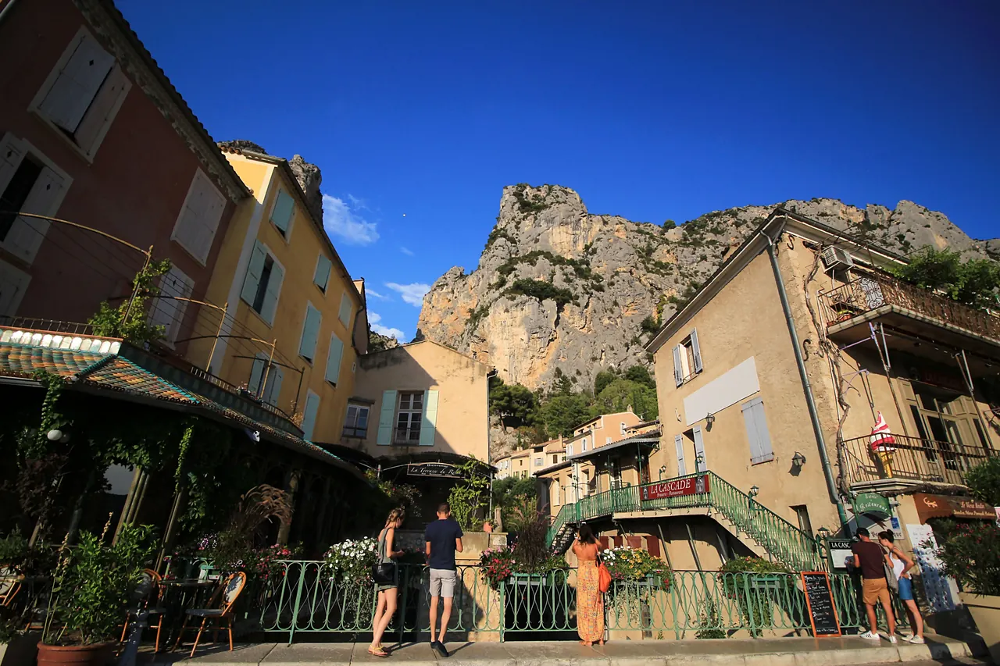
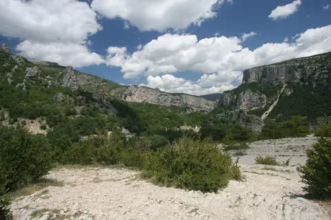
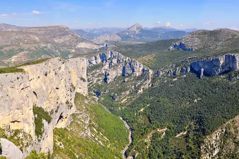
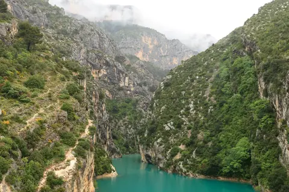
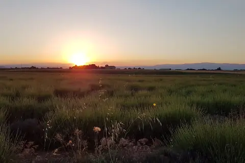

{kind=link}
관광·미술관
Nous avons déjà des billets.
이미 표가 있습니다.
누 자봉 데자 데 비예

Sainte-Croix 호수 북동쪽, 두 절벽 사이 계곡에 계단식으로 들어앉은 프랑스에서 가장 아름다운 마을(Les Plus Beaux Villages de France) 소속 마을이다. 17세기 이래 파이앙스(주석 유약 도기) 공방으로 이름을 알렸고, 지금도 공방과 도자기 박물관이 마을 정체성을 만든다.
절벽과 절벽 사이에는 쇠사슬에 매달린 금빛 별이 걸려 있다 — 기사 전설과 결부된 마을의 상징이다. 마을 위 절벽 중턱의 Notre-Dame de Beauvoir 예배당까지는 돌계단 262개(과거 365개)를 오르며, 십자가의 길 14처가 계단을 따라 이어진다. 예배당은 연중 무휴·주간 개방·무료다. 계단이 미끄러우므로 신발을 갖춘다.
"이 마을의 정수는 낮이 아니라 당일 관광객이 빠져나간 저녁과 아침이다." 1박을 하는 이유가 그것이다. 저녁 골목과 아침 계단 — 두 장면만 지키면 나머지는 전부 선택이다.
Aix에서 1시간 45분, Nice에서 2시간 15분, Marseille에서 2시간 거리다(마을 관광안내소 공식 기준). 마을 입구와 중심 인근에 무료·유료 주차장이 나뉘어 있고, 유료 주차는 Flowbird 앱을 쓴다. 성수기에는 마을 하부 주차장을 써서 골목 차량 진입을 피하라는 것이 공식 안내다. 구체 주차장 선택은 (재확인).
| 운영시간 | 마을 상시 개방. Notre-Dame de Beauvoir 예배당 연중 무휴 주간 개방(시간 비고정)·무료·계단 262개 |
|---|---|
| 주차 | 마을 입구·중심 인근 무료/유료 주차 혼재, 유료는 Flowbird 앱. 성수기에는 하부 주차장 권장. 구획·9월 요금 재확인 |
9/9(수) 저녁 도착, 9/10(목) 오전 출발의 1박 거점이다. 숙소는 미정 — 현지 결정이며, 도착 전 확보가 이 구간 최우선 사용자 액션이다. 마을 안 골목은 차량 진입이 제한적이므로 숙소의 주차 조건을 예약 시 확인한다.
Nous avons déjà des billets.
이미 표가 있습니다.
누 자봉 데자 데 비예
On peut prendre des photos ?
사진 찍어도 되나요?
옹 푀 프랑드르 데 포토
Où commence la visite ?
관람은 어디서 시작하나요?
우 코망스 라 비지트

Verdon 협곡 하류 입구를 내려다보는 대표 전망대. 주차 후 도보 10분에 Couloir Samson과 400m 절벽이 눈앞에 펼쳐진다.

La Palud에서 시작하는 24km 협곡 능선 순환도로. 전망대 15곳이 이어지고 중앙 구간은 시계방향 일방통행이다.

협곡이 끝나며 열리는 청록색 인공호수. Pont du Galetas 다리에서 협곡 입구로 들어가는 물길을 내려다본다.

라벤더로 이름난 고원 — 단 9월은 수확이 끝난 계절이다. 보랏빛 대신 밀밭·아몬드나무·너른 지평선을 지나는 경유 풍경으로 본다.